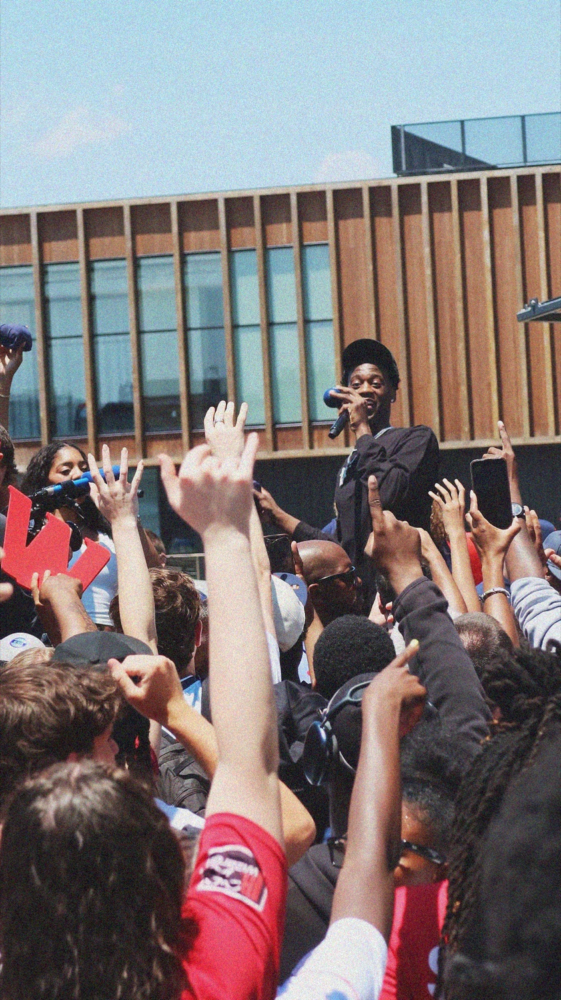
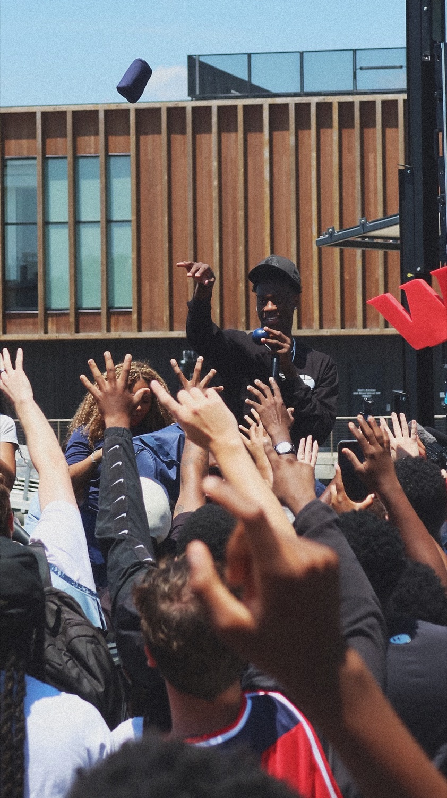
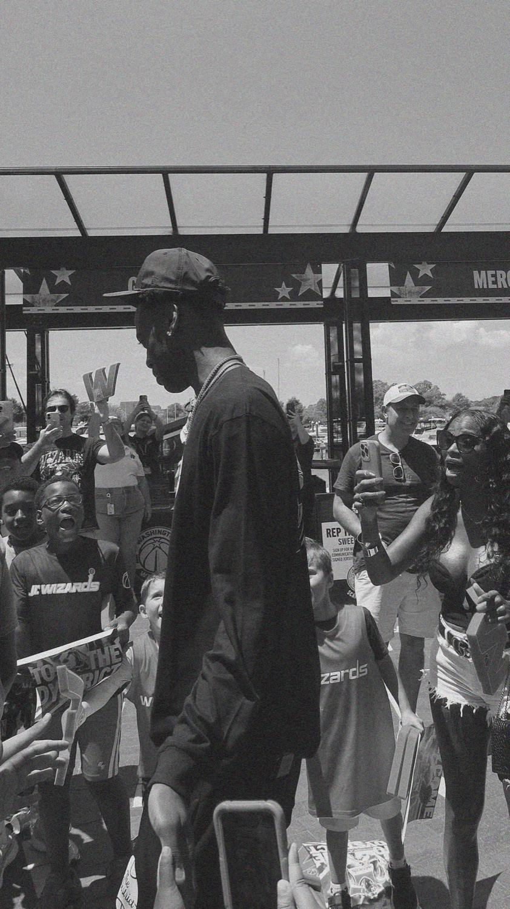
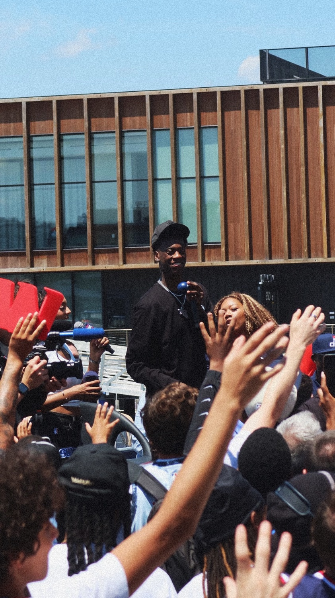

district debut




Hello everyone, this is my first entry under 'thoughts'! Thought it would be a great idea to introduce to you one of my great passions and interests that I've grown up with: watching basketball and being a fan of the Washington Wizards.
First, I'll take a step back. I remember watching my first Wizards game when I was around six or seven years old in my basement. I remember the magnificent John Wall along with his pick-and-roll partner, Marcin Gortat, along with many other players. At the time, I had not understood the magnitude of the game. I didn't understand how the game worked, if we were even good. I just knew that I liked to watch what was going on on the screen.
Each year following that, I would continue to slowly follow the Wizards more and more throughout my whole life until today. And throughout these years, we've had some success, particularly through the mid-2010s, but besides that, all I've known is despair. Absolute despair. Not only was our playoff success very minimal when we did make it, we missed the playoffs most years without any real direction on where the franchise was going. We didn't know if we wanted to aim for a high draft pick or try and win some games. Tens of millions of dollars were going to the wrong players, which limited the Wizards' ability to significantly improve the roster.
Three years ago, a new front office regime took over. Many changes were made in the last few years, and the trajectory of the franchise seemingly took a 180-degree turn. Now, after years of bad lottery luck, we won the 2026 Draft Lottery, as we got awarded the number one pick in a loaded draft class. With this pick, we selected AJ Dybantsa out of BYU, one of the most touted prospects we've seen in years. The city hadn't seen this level of excitement in, I don't know, how long, maybe since the 70s when we won a championship 48 years ago. The word that best describes my feeling and every Wizards fan is hope.
Finally! Finally, we have a player that we believe can take us all the way to a championship, and although he's 19, the whole city has rallied around him. It's truly amazing. My excitement reached so much that I decided to visit the 'District Debut' where he made his first public appearance with fans in D.C. The photos on the left are some of the photography that I took, but it was honestly cool to see him in-person embracing the city. It is awesome to see how the fans have rallied around a 19-year-old kid who is new to the city.
Although we certainly need new jerseys, I'm looking forward to the next 4, 8, or maybe even 10+ years of having AJ Dybantsa on our team. He is our franchise player, the media loves him, and he is clearly a mature 19-year-old. I think he has an immense amount of potential, and he is definitely going to sell tickets and fill seats in our newly renovated Capital One Arena. This is definitely the most excited I've ever been as a Wizards fan. I was always refreshing X before the draft to see if we were gonna draft AJ.
Now, he is a Wizard. Let's get it #4!